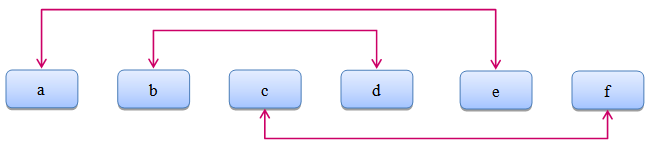

水题嘉年华温暖节最盛大的活动，而主办方为了缓解大部分OIer常年把不到妹的问题，特别设置了一个有趣的活动
“脱单连连看”。规则是这样的，有M 个OIer和 M个妹子参加这个节目，主持人在黑板上按照某个顺序写下这N=2M
个人的名字，然后请水题嘉年华的特邀嘉宾Lyra将OIer和妹子配对。具体来说，这M 个名字排成水平的一行，Lyr
a要画 M条折线，每条折线不能跨越名字所在的水平线，且必须连接一个OIer和一个妹子，任意两条折线不能相交
。举一个合法例子：

然而，很多OIer其实已经暗地里脱团了，于是每个OIer其实都带来了自己的妹子，只不过想借助这个活动来正大光
明的公布恋情。方便起见我们给每个人一个 0到 M-1的编号，一个OIer和他的妹子编号相同。Lyra的任务就是在合
法条件下连接每个OIer和他的妹子。现在 N个位置中某些位置的人已经确定了，剩下的由Lyra任意填写，Lyra想知
道，是否存在一种填写剩下位置的姓名的方式，使得她能在保证合法的前提下连接每个OIer和他的妹子。填写姓名
要保证0 到 M-1每个编号出现且只出现两次。